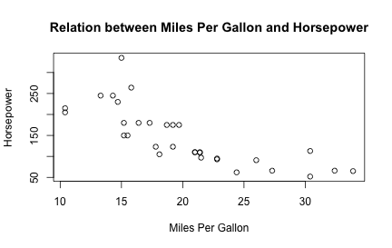

A Brief Intro to dynamic documents
(focusing mostly on R Markdown)
Daniel Anderson
R Training: Florida State University, June 22, 2016
(focusing mostly on R Markdown)

Before we get too far...
Striving toward reproducible research will:
Outside of reproducibility, you may want to use R Markdown to:
Not explicitly necessary, but generally helpful
---
title: Example Markdown document
author: Daniel Anderson
date: "2015-09-17"
---

output: argument (pdf_document,
html_document, word_document). Must be specified as it is rendered, if
not supplied.# Level 1
## Level 2
### Level 3 (etc.)
* Unordered list
- inset
+ inset more
- etc.
1. Ordered list
a. blah blah
2. More stuff

Start a code chunk with ```{r chunkName, chunkOptions}, then produce some r code, then close the chunk with three additional back ticks ```.

a <- 3
b <- 5
a + b * (exp(a)/b)
## [1] 23.08554
| Options | Arguments | Default | Result |
|---|---|---|---|
| eval | logical | TRUE | Evaluate the code? |
| echo | logical | TRUE | Show the code? |
| results | markup, asis, hold, hide | markup | Render the results |
| warning | logical | TRUE | Print warnings? |
| error | logical | TRUE | Preserve errors? (if FALSE, quit) |
| message | logical | TRUE | Print any messages? |
| include | logical | TRUE | Include any of the code or output or code? |
| tidy | logical | FALSE | Tidy code? (see formatR package) |
| Options | Arguments | Default | Result | |
|---|---|---|---|---|
| 9 | cache | logical, 0:3 | FALSE | Cache code chunks? |
| 10 | cache.comments | logical | NULL | Cache invalidated by comment changes? |
| 11 | dependson | char, num | NULL | Current chunk depend on prior cached chunks? |
| 12 | autodep | logical | FALSE | Should dependencies be determined automatically? (if TRUE, no need for dependson) |
| 13 | fig.height/fig.width | numeric | 7, 7 | Height and width of figure |
| 14 | fig.show | asis, hold, animate, hide | asis | How the figure should be displayed |
| 15 | interval | numeric | 1 | Interval (speed) When fig.show = 'animate' |
For complete documentation, see http://yihui.name/knitr/options/
You can show code without evaluating it, using eval = FALSE.

a + b * (exp(a)/b)
Alternatively, you can evaluate the code without displaying it, using echo =
FALSE.


ggplot(msleep,
aes(sleep_rem, sleep_total)) +
geom_point()
 Warning is printed to the console when rendering.
Warning is printed to the console when rendering.
ggplot(msleep,
aes(sleep_rem, sleep_total)) +
geom_point()
## Warning: Removed 22 rows containing missing values (geom_point).
ggplot(msleep,
aes(sleep, sleep_total)) +
geom_point()
## Don't know how to automatically pick scale for object of type data.frame. Defaulting to continuous.
## Error: Aesthetics must be either length 1 or the same as the data (83): x, y
If error = FALSE, the document won't render if it encounters an error.

Some functions will return messages. You may want to suppress these.
ggplot(msleep,
aes(sleep_total)) +
geom_histogram()
ggplot(msleep,
aes(sleep_total)) +
geom_histogram()
## `stat_bin()` using `bins = 30`. Pick better value with `binwidth`.
matRow<-matrix(c(10,11,12,13,20,21,22,23,
30,31,32,33),nrow=3,ncol=4,byrow=TRUE)
matRow<-matrix(c(10,11,12,13,
20,21,22,23,
30,31,32,33),
nrow=3,ncol=4,byrow=TRUE)
matRow <- matrix(c(10, 11, 12, 13, 20, 21, 22, 23, 30, 31, 32, 33), nrow = 3,
ncol = 4, byrow = TRUE)
matRow <- matrix(c(10, 11, 12, 13, 20, 21, 22, 23, 30, 31, 32, 33), nrow = 3,
ncol = 4, byrow = TRUE)
(It can only do so much, and sometimes ends up looking worse. Follow a style!)
Somewhat complicated


boys <- c(25, 32, 11, 54)
girls <- c(30, 29, 22, 43)
mean(boys)
## [1] 30.5
mean(girls)
## [1] 31
As can be seen, boys scored -0.5 points different than girls. Below is a histogram of each.
par(mfrow = c(1,2))
hist(boys)
hist(girls)

In other words, change the default behavior
opts_chunk$set(options)
For example, you can setup all chunks to be cached, and for the dependencies to be automatically determined, with the following code:
opts_chunk$set(cache = TRUE, autodep = TRUE)
dep_auto()
Note that dep_auto() is a function that must be run on its own (which finds the dependencies).
In other cases you may wan to suppress all the code. For example, when preparing a report for somebody.
opts_chunk$set(echo = FALSE)
You can always override the defaults (global options) within a particular chunk, e.g.
```{r, chunkName, echo = TRUE}
```

The include argument is used to evaluate code that is not included in the
document at all. For example, when setting up your global options.
Change the results chunk option to "asis"
For very simple tables, use kable from the knitr package
id <- rep(1:3, each = 2)
condition <- rep(c("A", "B"), 3)
score <- rnorm(6, 10, 3)
data <- data.frame(id, condition, score)
library(knitr)
kable(data)
| id | condition | score |
|---|---|---|
| 1 | A | 9.970197 |
| 1 | B | 9.723801 |
| 2 | A | 14.176408 |
| 2 | B | 9.380744 |
| 3 | A | 7.761407 |
| 3 | B | 13.076991 |
style = "rmarkdown"library(pander)
pander(lm(Sepal.Width ~ Species, data = iris),
covariate.labels = c("Versicolor" , "Virginica" ),
style = "rmarkdown")
| | Estimate | Std. Error | t value | Pr(>|t|) | |:-----------------:|:----------:|:------------:|:---------:|:----------:| | Versicolor | -0.658 | 0.06794 | -9.685 | 1.832e-17 | | Virginica | -0.454 | 0.06794 | -6.683 | 4.539e-10 | | (Intercept) | 3.428 | 0.04804 | 71.36 | 5.708e-116 |
Table: Fitting linear model: Sepal.Width ~ Species
For xtable, you have to make sure you specify results = "asis".
If you're in a markup environment (what we've been talking about), you have to also make sure you specify type = "html".
library(xtable)
mat <- round(matrix(c(0.9, 0.89, 200, 0.045, 2.0), c(1, 5)), 4)
rownames(mat) <- "$y_{t-1}$"
colnames(mat) <- c("$R^2$", "$\\bar{x}$", "F-stat", "S.E.E", "DW")
mat <- xtable(mat)
print(mat,
sanitize.text.function = function(x) {x},
type = "html")
| $R^2$ | $\bar{x}$ | F-stat | S.E.E | DW | |
|---|---|---|---|---|---|
| $y_{t-1}$ | 0.90 | 0.89 | 200.00 | 0.04 | 2.00 |
Same example, but with specifying results = "asis"
print(mat,
sanitize.text.function = function(x) {x},
type = "html")
## <!-- html table generated in R 3.3.0 by xtable 1.8-2 package -->
## <!-- Thu Jun 16 14:52:49 2016 -->
## <table border=1>
## <tr> <th> </th> <th> $R^2$ </th> <th> $\bar{x}$ </th> <th> F-stat </th> <th> S.E.E </th> <th> DW </th> </tr>
## <tr> <td align="right"> $y_{t-1}$ </td> <td align="right"> 0.90 </td> <td align="right"> 0.89 </td> <td align="right"> 200.00 </td> <td align="right"> 0.04 </td> <td align="right"> 2.00 </td> </tr>
## </table>
holdm1 <- lm(mpg ~ ., data = mtcars)
coef(m1)
coef(summary(m1))[, "Std. Error"]
arm::display(m1)
## (Intercept) cyl disp hp drat wt
## 12.30337416 -0.11144048 0.01333524 -0.02148212 0.78711097 -3.71530393
## qsec vs am gear carb
## 0.82104075 0.31776281 2.52022689 0.65541302 -0.19941925
## (Intercept) cyl disp hp drat wt
## 18.71788443 1.04502336 0.01785750 0.02176858 1.63537307 1.89441430
## qsec vs am gear carb
## 0.73084480 2.10450861 2.05665055 1.49325996 0.82875250
## lm(formula = mpg ~ ., data = mtcars)
## coef.est coef.se
## (Intercept) 12.30 18.72
## cyl -0.11 1.05
## disp 0.01 0.02
## hp -0.02 0.02
## drat 0.79 1.64
## wt -3.72 1.89
## qsec 0.82 0.73
## vs 0.32 2.10
## am 2.52 2.06
## gear 0.66 1.49
## carb -0.20 0.83
## ---
## n = 32, k = 11
## residual sd = 2.65, R-Squared = 0.87
m1 <- lm(mpg ~ ., data = mtcars)
coef(m1)
## (Intercept) cyl disp hp drat wt
## 12.30337416 -0.11144048 0.01333524 -0.02148212 0.78711097 -3.71530393
## qsec vs am gear carb
## 0.82104075 0.31776281 2.52022689 0.65541302 -0.19941925
coef(summary(m1))[, "Std. Error"]
## (Intercept) cyl disp hp drat wt
## 18.71788443 1.04502336 0.01785750 0.02176858 1.63537307 1.89441430
## qsec vs am gear carb
## 0.73084480 2.10450861 2.05665055 1.49325996 0.82875250
arm::display(m1)
## lm(formula = mpg ~ ., data = mtcars)
## coef.est coef.se
## (Intercept) 12.30 18.72
## cyl -0.11 1.05
## disp 0.01 0.02
## hp -0.02 0.02
## drat 0.79 1.64
## wt -3.72 1.89
## qsec 0.82 0.73
## vs 0.32 2.10
## am 2.52 2.06
## gear 0.66 1.49
## carb -0.20 0.83
## ---
## n = 32, k = 11
## residual sd = 2.65, R-Squared = 0.87
fig.show = "hold"x <- seq(-4, 4, 0.1)
plot(x, dnorm(x, 0, 1), type = "l", main = expression(sigma == 1))
plot(x, dnorm(x, 0, 3), type = "l", main = expression(sigma == 3))
A single back tick followed by r prooduces inline code to be evaluated.

This is an example of inline code, where I want to refer to the sum of a and
b, which is 8.
This is extremely useful in writing reports. Never have to update any numbers in text, regardless of changes to your models or data (if you are careful about it).
To include references in your paper, you must:
bibliography: nameOfYourBibFile.bib in your YAML front matter.@


| Citation Style | Output |
|---|---|
| @Briggs11 | Briggs and Weeks (2011) |
| [see @Baldwin2014; @Caruso2000] | (see Baldwin et al. 2014; Caruso 2000) |
| [@Linn02, p. 9] | (Linn and Haug 2002, 9) |
| [-@Goldhaber08] | (2008) |
Note this is not APA. However, references are included automatically at the end of the document. Include # References as the last line of your document to give it a title.

Through a text editor (e.g., SublimeText)
install.packages("rmarkdown")
library(rmarkdown)
setwd("dir/to/Rmd/doc")
render("ExampleRMarkdown.Rmd",
"html_document")
Note that the document type need not be specified if output: is supplied in
the YAML front matter.
Through RStudio


If you use RStudio, you should be able to render HTML output automatically
with the knit2html button.
However, if you use a text editor (like I do), then you'll need to also install pandoc (http://pandoc.org).

Regardless of whether you use RStudio or not, you will also need to install a TeX distribution.


but...
install.packages("devtools")
library(devtools)
install_github("crsh/papaja")


Make sure to look at the documentation
The more you ask from it, the more complicated it becomes.
Challenges
I'm still actively learning this whole process. I recommend Yihui's book, it's quite good.
(if we have time)